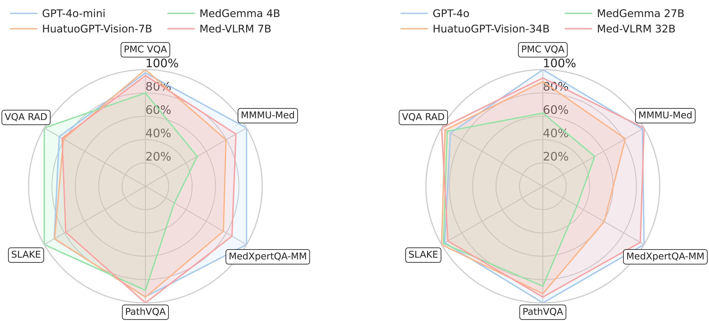
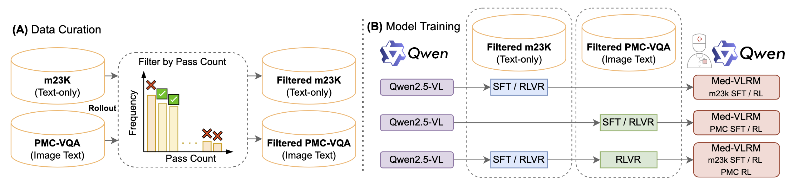
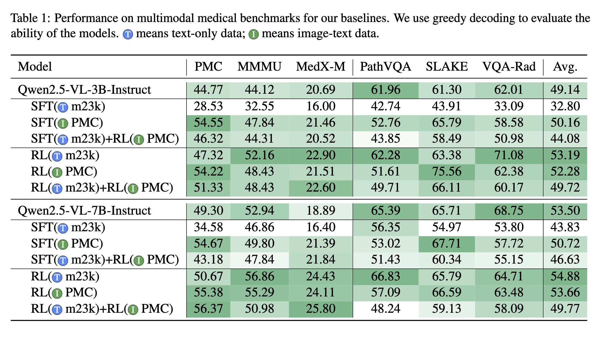
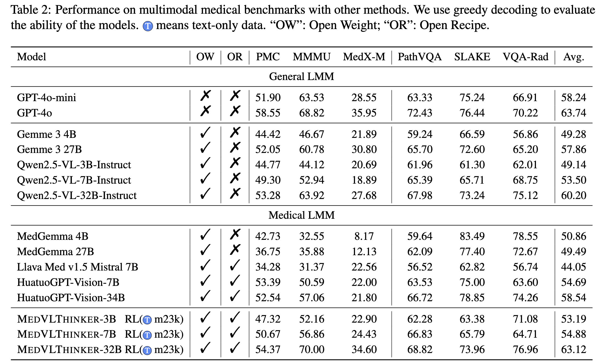

Abstract
Large Reasoning Models (LRMs) have introduced a new paradigm in AI by enabling models to “think before responding” via chain-of-thought reasoning. However, the absence of open and reproducible recipes for building reasoning‑centric medical LMMs hinders community‑wide research, analysis, and comparison. We present MedVLThinker, a suite of simple yet strong baselines that couples systematic data curation with two training paradigms—Supervised Fine‑Tuning (SFT) and Reinforcement Learning with Verifiable Rewards (RLVR). Our best open 7 B model establishes a new state‑of‑the‑art on six public medical VQA benchmarks and our 32 B variant reaches performance on par with GPT‑4o. All data, code, and models are released to foster future research in multimodal medical reasoning.
Key Contributions
- Open Recipe for building multimodal medical reasoning models, including data curation, filtering, and training scripts.
- RLVR Training pipeline that consistently outperforms supervised CoT distillation across model sizes.
- State‑of‑the‑art Results on six medical VQA benchmarks for all open‑source models up to 7 B parameters.
- Scalability: a 32 B variant that matches proprietary GPT‑4o performance.
- Full Release: curated datasets, checkpoints, and evaluation harness under Apache‑2.0.
Method Overview
The figure illustrates our data filtering and two‑stage training pipeline (SFT, RLVR). Click to enlarge.
{kind=link}
Main Results
Our models set new records among open models on PMC‑VQA, SLAKE, and VQA‑Rad. See the figure below and our GitHub repo for the complete table.
 Qualitative Results
We present qualitative results showcasing the capabilities of our models in various medical reasoning tasks. Click to enlarge.

We also provide qualitative results of 3B and 7B models: 3B, 7B
Citation
@misc{medvlthinker_2025,
title={MedVLThinker: Simple Baselines for Multimodal Medical Reasoning},
author={Huang, Xiaoke and Wu, Juncheng and Liu, Hui and Tang, Xianfeng and Zhou, Yuyin},
journal={arXiv preprint},
year={2025}
}